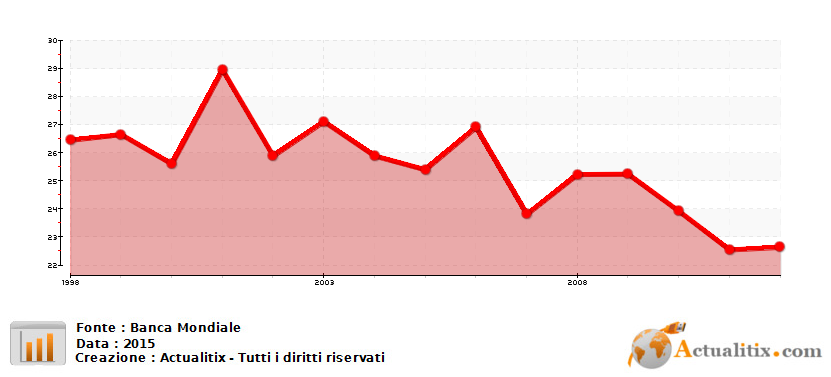

La qualità dell'istruzione della scuola Italiana è nettamente inferiore alla media dell'Unione Europea. Un grande numero di adolescenti italiani (tra il 15% e il 25%) non riesce a raggiungere la soglia delle competenze minime indispensabili per orientarsi nello studio universitario o nel mondo del lavoro. E' necessario quindi garantire un potenziamento delle competenze di base e migliorare l'inclusione sociale, per combattere l'abbandono precoce degli studi e le forme di dispersione scolastiche.
Nella Costituzione Italiana, nel 1946 venne stabilita l'istruzione pubblica, gratuita ed obbligatoria fino agli 8 anni, con la libertà di istituire scuole "senza oneri per lo stato". Il sistema rimase però quello precedente: una scuola elementare di durata 5 anni, 3 anni di scuola media e successivamente la "scuola di avviamento professionale". Per tutta la seconda metà del Novecento si susseguirono diverse riforme tra cui quella del 1969 con cui vennero istituite le scuole materne statali e venne abolito l'esame di ammissione alla I Liceo. Sempre in quest'anno vennero approvate delle norme che liberalizzarono l'accesso agli studi universitari e che modificarono l'esame di maturità con due prove scritte ed una orale. Durante gli anni settanta rimasero i problemi di evasione scolastica, che si manifestò particolarmente tramite un fenomeno di selezione tramite la bocciatura degli alunni. Una grande novità furono i "decreti delegati", approvati nel '74, i quali introdussero una rappresentanza dei genitori, il personale ATA e rappresentanza degli studenti. Il cambiamento maggiore però si ebbe sulla scuola elementare: nacque la "scuola a tempo pieno" come risposta ai bisogni sociali e destinato a diventare un laboratorio di innovazione per l'apprendimento e per lo spazio curriculare. Nel 1979 vene eliminato il Latino dall'programma scolastico. Negli anni ottanta e novanta si ripresentarono i problemi delle bocciature selettive, ma il problema maggiore fu la "dispersione scolastica", ovvero la mancanza di livelli adeguati di apprendimento anche in assenza di bocciature. Si cercò quindi di aumentare l'età dell'obbligo scolastico, senza successo però. Ci furono ancora significativi mutamenti alla scuola elementare, come l'introduzione di una pluralità di docenti per la stessa classe.